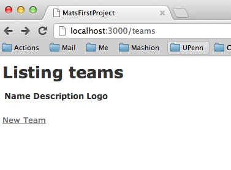
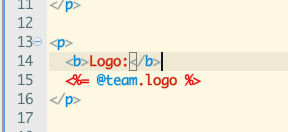
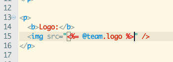
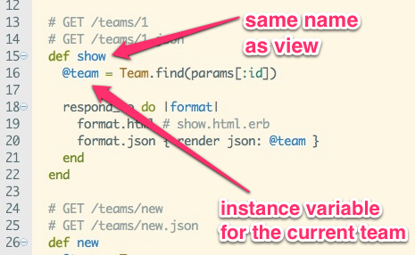

# Web Programming
slides.matschaffer.com/3
# Objects
Specific "Things" in ruby
# Objects
* Me
* my "finding developers" blog post
* your comment on piazza
* Minecraft
* a purple pen
* a tweet
* the Eagles
# Classes
Types of "things"
# Classes
* Person
* Post
* Comment
* Player
* Game
* Pen
* Message
* Team
# Classes?
* Me
* my "finding developers" blog post
* your comment on piazza
* Minecraft
* a purple pen
* a tweet
* the Eagles
# I'm making:
## a League App
 # What classes should I have?
# My classes
* Team
* Player
* Venue
* Game
# Attributes
Data that makes an object specific
# What attributes would Team have?
# Team
* name
* description
* logo
* (id, created\_at, updated\_at)
# Types
Tells Ruby what kind of data an attribute holds
* string
* integer
* decimal
* datetime
# Team Attribute Types?
* name
* description
* logo
* (id, created\_at, updated\_at)
# Model =
Class + Attributes + Types ( + methods)
# Make models with
rails generate model ...
# What classes should I have?
# My classes
* Team
* Player
* Venue
* Game
# Attributes
Data that makes an object specific
# What attributes would Team have?
# Team
* name
* description
* logo
* (id, created\_at, updated\_at)
# Types
Tells Ruby what kind of data an attribute holds
* string
* integer
* decimal
* datetime
# Team Attribute Types?
* name
* description
* logo
* (id, created\_at, updated\_at)
# Model =
Class + Attributes + Types ( + methods)
# Make models with
rails generate model ...
rails generate model team \
name:string \
description:string \
logo:string
Look in app/models/team.rb
That's your model
class Team < ActiveRecord::Base
attr_accessible :description, :logo, :name
end
So destroy the model
rails destroy model team
And make a scaffold
rails generate scaffold team \
name:string \
description:string \
logo:string
# Scaffold =
Model + Views + Controllers
run this
rake db:migrate
* start your sever
* go to [http://localhost:3000/teams](http://localhost:3000/teams)

# Try putting in some data
# How about a real image?
app/views/teams/show.html.erb
before

after

# Views
<p>Mix html <%= with_ruby_code %></p>
Come from the controller
app/controllers/teams_controller.rb

# Try it out, see what breaks!